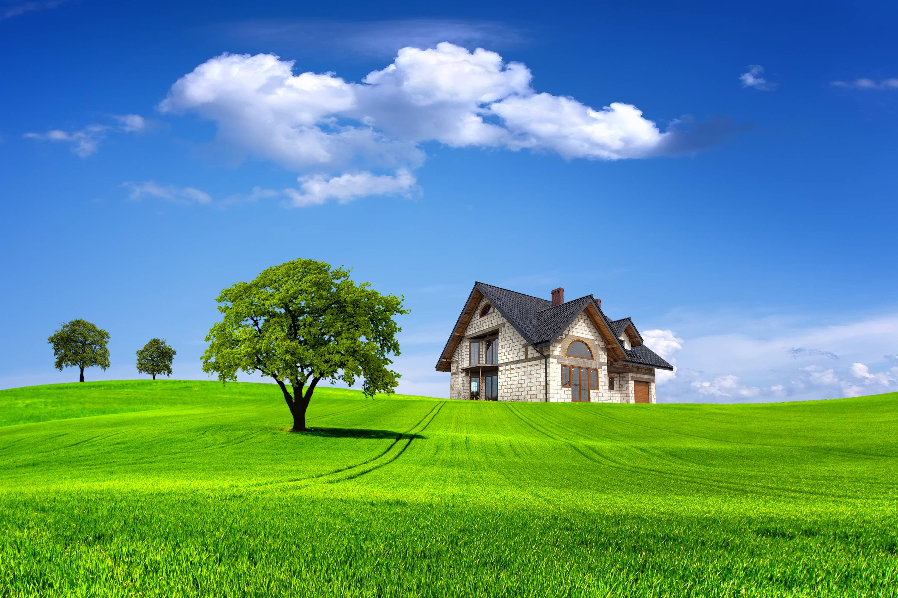

 Ходит да нюхает все: новый домик, надо же привыкнуть. Смотрят с березы скворец и скворчиха и удивляются — никогда еще в саду они такого чуда не видали. Впереди шагает Василий Иванович, пыхтит и волочит по земле красный коврик, за ним вприпрыжку Тася с целым кукольным семейством на руках, за ней Лиля с жестяной кухней, с резной полочкой, с самоваром, за ними мама с занавеской и с посудой (такая большая, а с девочками играет!), за ней папа, широкий, как купальная будка, идет, очками на солнце блестит, а в руке молоток и картинки, за ними кухарка с морковками, а в самом хвосте черная собака Арапка — ничего не несет, идет, язык высунула и тяжело дышит…